Creating a vector image in Illustrator - Designing the text01/09/15

Welcome to part two of the three part series on creating a vector image of a logo from a source file in Adobe Illustrator. This article will demonstrate the process for the Dell logo, which is labelled for reuse.
In the last part we created the background of the logo. Now it is time to focus on the text.
Firstly, consider that we do not know how the text was created. There may be a font used for the Dell logo, but we do not know the name of the font. You might be tempted to explore the available fonts, but this will just take a long time and yield a poor result.
Instead, take a moment to examine the text and consider all the shapes that could be combined to create the word.
In this case the text is comprised of twelve shapes:
- two rectangles are used to create each of the two “L’s”
- two rectangles and two circles are used to create the “D”
- another four rectangles are used to create the slanted “E”.
In this article we will create the “D” and “L” letters.
Creating the logo text
To create the logo text:
- Open the .ai file from Part 1.
-
Click .
The Layers panel is displayed.
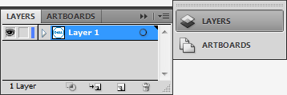 -
Click to add a new layer.
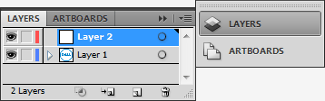 -
Double-click the new layer.
The Layer Options window is displayed. -
Rename the layer “Text”.
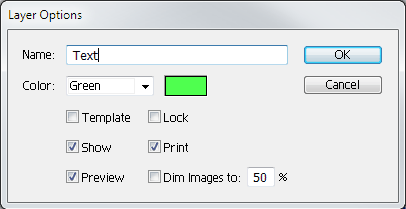 -
Select the Rectangle tool.
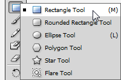 -
Drag out a rectangle over the vertical rectangle in the “L”.
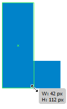 -
Drag out a rectangle over the horizontal rectangle in the “L”.
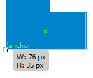 -
Select both rectangles.
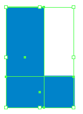 -
Select the Eyedropper tool.
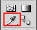 -
Click the blue colour.
-
Select Window > Pathfinder.
The Pathfinder panel is displayed.
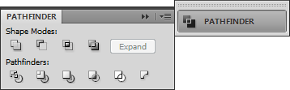 -
Click Merge.
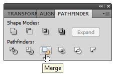 -
Click the “L” shape while holding down the Alt key (Option key on a Mac).
The mouse cursor changes to .
.
-
Drag away from the “L” shape.
The L is copied. -
Drag out a rectangle over the “D”.
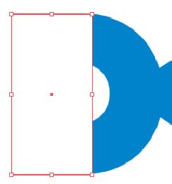 -
Select the Ellipse tool.
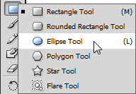 -
Drag out a circle to match the curve of the “D”.
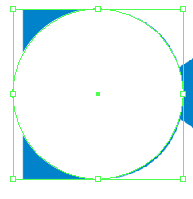
Note: Remember to hold the Shift key to constrain proportions. - Repeat steps 12 and 13 to merge the shapes.
At this point you will notice that the “D” has a bump. We’ll now remove this imperfection using the Delete Anchor Point tool. This tool is one of several used in conjunction with the Pen tool to manage precise curves in Illustrator. We’ll learn more about the Pen tool in the next tutorial.
-
Select the Delete Anchor Point tool.
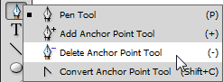 -
Click each of the following three anchor points to remove the bump.
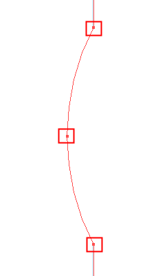 - Repeat steps 14 and 15 to copy the “D” shape.
-
Select the Selection tool.
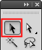 -
Resize the “D” until it matches the size of the white inner “D”.

-
With the smaller “D” still selected, double-click the foreground colour.
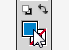
The Color Picker window is displayed.
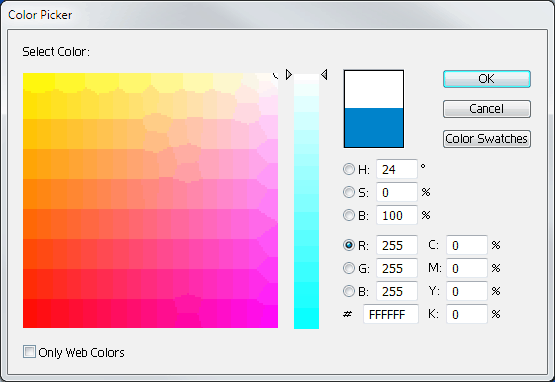 - Select white by entering the values displayed in the image above.
- Save the image.
Now we have three out of four letters. You might have noticed that the “E” is not made up of perfect rectangles. In the next article we will use the Pen tool to create this more complicated shape.